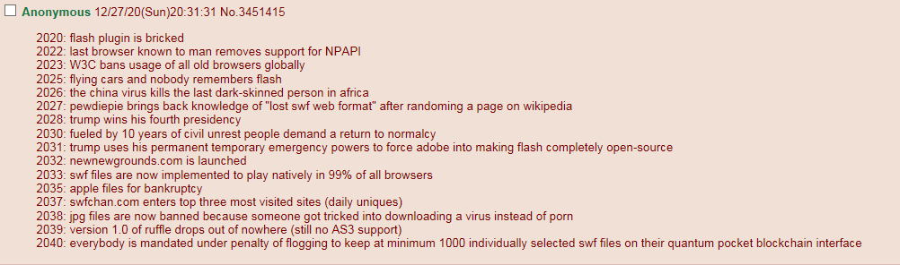

The Internet is Serious Business!
Home > Computers, Technology, and Internet > Adobe Flash Will Never Die

In a way, my earliest motivation to get Internet access in our house was due to Adobe Flash. During Halloween 2003, my school held its annual Halloween party for the students and their parents; it was held at the school, but as this was an evening party outside of regular school hours, the rules were relaxed quite a bit. At one point during the party, I very clearly remember heading into the school's Internet-connected computer lab and (most likely because I saw the other kids doing so) accessing—for the first time in my life—the Flash-heavy CartoonNetwork.com Web site, exploring it, and eventually spending most of the rest of the party playing the site's Flash (and also Shockwave) games, which I very much enjoyed.
Soon afterwards (around November 2003) our house got connected to the Internet, no doubt due in part to my insistence. At the time, the sole reason I wanted Internet access in our house was so that I could visit the Cartoon Network and Nickelodeon Web sites on my home computer and play the Flash and Shockwave games found on them; my goals were very narrow and specific, and I did not imagine that I would ever use this connection for anything else. Very soon afterwards, though, I branched out, and took to exploring the wider Internet, and in so doing immediately exposed myself to the countless games, animations, applications, advertisements, and even Web sites built with Flash. In time I would stumble upon and then begin frequenting major Flash sites like eBaum's World, Newgrounds, and YouTube (which, though technically centered around videos rather than Flash animations/games, nevertheless relied on the Flash Player for many years to play those videos), as well as discover and then spend much time playing large, popular Flash-based games like AdventureQuest and Club Penguin, among many, many others.
Flash thus forms an indispensable part both of my specific 2000s Internet experience as well as of the 2000s Web in general, though its use, of course, persisted well into the next decade, and even today it is still far from dead, if you know where to look. During the 2000s I did not, admittedly, notice its presence very much, it being the platform on which the content runs, rather than the content itself—i.e., I was more apt to notice whatever Flash animation I was viewing or Flash game I was playing than to notice the technology running it; but neither was I totally ignorant of the peculiarities of Flash, particularly its characteristic look (which is a result of its use of vector graphics) that, I think, anybody who has viewed many Flashes will immediately recognize. It was always there, in the background, quietly powering pretty much all interactivity on the Web.
Flash's dominance in the 2000s is commonly described as ubiquitous
or pervasive
, and both words are very fitting: it really was everywhere, because any site that wanted to deliver games, animations, video, or anything more than rudimentary functionality used Flash (or maybe even Java applets); JavaScript in those days was relegated to its rightful place as the insignificant tool you used to spawn annoying pop-up windows, and little else. I recall that in the several instances when I either bought a new computer, reinstalled the operating system on my current computer, or restored my computer to a pre-installed factory image on my hard drive, one of the first things I installed on this fresh OS, before I did any serious Web browsing, was the latest version of Flash Player—not doing so would simply result in too many broken Web sites, including (for many years) YouTube. At the end of the 2000s it appeared to me—and many others—that Flash would be long secure in its position, and would continue to drive multimedia on the Web for the foreseeable future.
Although Flash held strong throughout the early 2010s, it was during the middle of that decade that I first noticed its presence on the Web begin to diminish. I started hearing talk of how Flash was outdated
, deprecated
, and that it needed to die
. It suddenly became hip to ridicule Flash, and fashionable to tout that HTML5™ meme thing as the replacement
for Flash in the Modern Web™. As the 2010s progressed, and Adobe announced the planned end-of-life, the critics grew ever more smug; when 2020 drew to a close, and the end-of-life date arrived, these joyless souls proclaimed their final victory over Flash, which they had been incessantly declaring as dead
, as if a single software company could decide the fate of a platform that had very much grown beyond its control. They acted as if every SWF file would suddenly break and every Web site would instantly remove all Flashes hosted on it, but this was plainly wrong, and Flash continues to be used, even today. (Perhaps, though, if they were to write, for the ten thousandth time, the FLASH IS DEAD!!!
line in the title of their news articles
, they might finally manage to fool themselves.)
I have never understood the hostility towards Flash. Many of its critics today parrot the same two arguments: that Flash has serious security vulnerabilities, and that it is largely lacking support on mobile devices. The Wikipedia article for Adobe Flash lists in its criticisms section six distinct complaints, including the two aforementioned, but, besides the security concerns, none are convincing; below I address each one.
Alas, today this is largely a theoretical FOSS'er concern that has worked its way into a Wikipedia article. I do not believe that the fact that Flash being proprietary, by itself, is a valid moral objection, and far less that it is a cause of real-world worry; it is only if Adobe (or Macromedia, in the old days) were somehow to take advantage of this and abuse it that it would become an issue, but the Web's 20+ years of experience with Flash has shown that this has not been the case. The concern is that both users and Flash authors will be dependent upon Adobe for the software to make and view Flashes, but in the very same Wikipedia article are listed many non-Adobe third-party Flash animation tools, Flash programming tools, and Flash players, including even some open-source ones to satisfy the FOSS'ers. What is especially mistaken is the second half of the quote by Tristan Nitot, which claims that there's someone in the middle deciding whether users should see [Flash authors'] content
, which is utterly false—neither the official Adobe Flash Player plug-in nor the official Adobe Flash authoring software requires you to obtain some permission from Adobe to view or compile SWF files.
Over the years, as Flash became widespread on the Web, complete control of the format gradually slipped from Adobe's grasp, and now, in a way, it has become something like an open standard: this is evidenced by the existence of all the non-official (i.e. non-Adobe) Flash tools and players, some open source, developed without any connection to Adobe. Perhaps in the past, when the non-official tools and Flash players didn't exist, this argument might have had more merit, but today it is entirely possible for someone to produce Flashes using non-Adobe tools, and for others to view those Flashes using non-Adobe players; hence the vendor lock-in argument, in practical terms, is no longer relevant. Some will still object on principle to SWF being a proprietary format, but, again, this has been reduced to a purely theoretical complaint.
This is a criticism concerning a specific use of Flash, and not of Flash itself: the distinction must be made, for it is an important one. That some people will use Flash in a manner that results in poor Web accessibility—e.g., they design their whole Web site as a large Flash application, or otherwise implement major and fundamental portions of it in Flash—is not a valid complaint against the whole platform, but only towards those particular individuals. Note also that the sole article referenced for this subsection of the Wikipedia article was published in 2000, back when completely Flash-based Web sites were far more common; after the practice itself largely disappeared, the strength of this argument—which was not ever applicable to Flash, anyway—diminished in turn, and today it is very much an outdated complaint.
Again, this is not a flaw of Flash itself; instead, the fault lies with the specific Web browsers that either do not support Flash or have elected to block it, or with the specific users who cannot even be bothered to download and install a single browser plug-in. I also find it laughable that this subsection of the Wikipedia article suggests that requiring the user to click to play Flash content in the browser is a significant issue, as if merely clicking something once were anything but an extremely simple and quick act which all but the absolute laziest would readily perform in order to view Flashes. This entire subsection, indeed, is full of irrelevancies and non-issues.
This is another concern that today is no longer relevant: as noted in this subsection of the Wikipedia article, it is only in version 10.2 and earlier of Adobe Flash Player that it might be somewhat troublesome for the user to delete Flash cookies stored on his system; beginning with the subsequent version 10.3 of Flash Player—which was released nearly a decade ago—the matter was greatly simplified. Even in versions prior to 10.3, however, it is far from impossible to delete the cookies, and certain parts of this subsection of the article seem to present the nonsensical claim that Flash should be blamed for its users' own ignorance of Flash cookies. As regards the issue of Web sites not adequately disclosing in their privacy policies the use of Flash cookies, the fault there clearly lies with the particular sites, and not with Flash itself.
This is at once the most irrelevant and absurd of the six criticisms, and the reason is so plainly obvious that I cannot believe there really exist in the world those who are unable to apprehend it, and for whose sake I am obliged to provide here the explanation.
To them, I say that the primary purpose of the cell phone is communication, viz., voice calling, text messaging, and e-mail. Web browsing was not one of its original purposes, nor should it now be assumed to be a core one, but rather a bonus feature over which, if your cell phone happens to support it, you should feel fortunate—i.e., on cell phones complete Web and Flash support should not be seen as the default; instead, it is the absence of such support that should be expected from that class of device. A desktop or laptop computer is vastly superior to a mobile phone in regards to Web browsing, and if the former is available for this use, I see no reason why anybody would ever prefer the latter. It is only if you find yourself in the unfortunate situation of needing to access the Web and/or the wider Internet, but are away from your desktop or laptop PC, that you must resort to using a mobile phone; in this case, when you have been forced to settle for a device that is very constrained and underpowered when compared to a PC, and which has a screen about the size of your hand, then I should have thought it common sense that you only prepare yourself for a heavily limited, degraded, and inferior browsing experience, which, among many other things, entails a complete lack of Flash support.
Mobile, in other words, is merely a temporary Web browsing solution, to be used when access to a far more capable PC is unavailable; for Web access it is only a stopgap, and hence it should be immediately apparent that many faults will be present and many features (like Flash) missing, but this must be understood and tolerated as inherent limitations of the platform. I could at least understand if the complaints were directed specifically towards those cell phones that don't have Flash support, or which support it poorly, for in those cases the deficiency is clearly on the part of those particular devices.
This is not, however, what the critics of Flash have done. Rather than criticizing the mobile platform for having poor or no Flash support, as is proper, in an utter inversion of reason itself they have somehow shifted the blame on Flash, and maintain that Flash, not mobile, should be criticized because a certain insignificant category of computing devices does not support it. This is flatly absurd, and should not require any further explanation, but for the truly slow perhaps an analogy here will help.
Consider, for example, the case of software written for supercomputers: such software either cannot run on PCs, or, if it can, would run so slowly that it would be practically useless; yet this lack of support on a particular computing platform is never taken as a shortcoming of the supercomputer software itself, for it is widely understood that it is designed and developed for an entirely different category of computer, and we would instead fault the PC for being incapable of running such software. For what reason, then, would the case of Flash and mobile be any different? Is not Flash designed for the Web, while mobile phones are not? Flash was never intended for the mobile sector, just as supercomputer software was never intended for PCs; hence the lack of support is normal, and should be perceived as such.
Nevertheless this argument
still persists today, because (I can only suspect) Flash, unlike supercomputer software, has numerous enemies who seek to discredit it at every turn. Those who push it, at best, demonstrate a profound misunderstanding of the purpose of the cell phone, and, at worst, attempt deceptively to shift the blame from some other entity to Flash itself.
Thus only the matter of Flash's security record remains. Although I will acknowledge that this not an insignificant issue, yet its importance is not absolute, and the chief error of the anti-Flash crowd regarding this topic is their mistaken assumption that it is so—i.e., they believe that, in every discussion concerning Flash, they can simply make an appeal to the supposed Final Authority of Security, which they have elevated to a position of primary concern, and thus render insignificant all of their opponents' arguments in favor of Flash, for, in their eyes, security takes precedence over everything else. In the worst and most extreme cases, there are those so narrow-minded that they assert that security is the only concern, that nothing else matters, and that Flash should be judged solely by its security record.
I cannot help but feel a degree of pity for these security zealots. Their single-minded fixation with Flash's security issues indicate that they have not any fond memories of the 2000s Web and its domination by Flash, but rather see the whole platform in a very cold and detached manner. Their poor minds are unable to recall and appreciate the great cultural value that Flash has contributed to the world: classics of Internet animation, like Peanut Butter Jelly Time
, The End of the World
, and The Ultimate Showdown of Ultimate Destiny
(SWF file), were all produced with Flash; some Flash animations and games, like ScientLOLojyuuichi!!
(SWF file), Warfare 1917, and nearly everything by ZONE, though made by amateurs, attained a level of quality and polish that, I would contend, rivaled anything found on television or released by a large video game developer; whole books were written concerning the platform; entire sites were built around Flash content, such as Newgrounds, eBaum's World, Albino Blacksheep, YTMND, AddictingGames, Miniclip, and Kongregate, to name some of the largest; whole companies specialized in Flash games, like Armor Games and XGen Studios; 4chan has had its own Flash upload board since 2004, from which emerged its own distinct Flash-based cultural heritage; YouTube relied on Flash throughout the entirety of the 2000s to play every video on the site, and did not default to an HTML5 player until 2015; and large, successful games, like Neopets, AdventureQuest, and even an MMOG like Club Penguin, were developed entirely in Flash—and this is not even considering the countless other sites that had Flash content, or the great many companies and organizations that must have used Flash-based applications internally, and relied heavily upon them.
There are also technical advantages to Flash: for example, an animation encoded as a SWF is typically smaller than one encoded in a video format, particularly if it is all or mostly vector-based animation; Flashes, unlike video, can much more smoothly upscale to higher resolutions due to the nature of vector graphics; and Flash content, unlike HTML5, is compiled as a single SWF file and thus is very easily distributed.
However, it is the doubtless the cultural importance of Flash that is its greatest legacy. Much of the 2000s indie game and animation scene was centered around Flash, and I know of no other platform that permitted so many people to produce such material so easily. It was easy to learn and not too expensive; anybody could become reasonably proficient with the technology in a week or two, and thereafter begin putting out animations that previously had required far more time, effort, and training to produce. It was precisely this accessibility—the fact that the average individual could so readily leverage its power—that made Flash a great democratizing force on the Web: now animations, which prior to Flash had been the domain of professional animators, and video games, which prior to Flash had largely been the works either of large companies or of highly skilled and dedicated programmers, suddenly fell within the power of ordinary Web users to produce, and consequently the Web saw a great flourishing of creativity in these two areas that was enabled solely by Flash—although, of course, its utility was so great that it was not confined only to the Web, but also saw, and continues to see, use by major film studios and television networks.
Flash, truly, is the king of Web multimedia, and contributed immensely to Web and Internet culture; so much diverse and wonderful material—much of which was made by amateurs—would not exist if it weren't for Flash, and when I consider all of this, I am tempted to assert that not even the security concerns can override its cultural legacy and value. It might have its competitors and emulators, but nothing can replace it perfectly, and neither will it vanish simply because an annoying vocal minority wishes it so. My perception is that we appear to be (as of March 2021) in the midst of an anti-Flash hysteria, driven largely by the efforts of the aforementioned group, which will assuredly wear off in time, after which I predict that Flash, like many old technologies, will see a renewal of interest. The sentiment is amusingly expressed in the following post I encountered on 4chan's /f/:

I urge you, then, to do your part to assist Flash, and to ready yourself for its inevitable comeback: download free old versions of the Flash authoring software and then learn how to use them so that you can begin creating your own Flashes, download the enormous Flash archive that is BlueMaxima's Flashpoint so that you can familiarize yourself with this esteemed Web tradition, continue viewing Flashes within your Web browser by reading my guide on the subject, download the standalone Flash Player projector to view Flashes outside your Web browser, archive everything on Newgrounds, insist on both obtaining and distributing the original SWF rather than a converted video file, and always remember to defy the enemies of Flash. Flash lives on!


 All written materials on this Web site are my own, and all are released under the Do What the Fuck You Want to Public License Version 2.
All written materials on this Web site are my own, and all are released under the Do What the Fuck You Want to Public License Version 2.
This page last modified on 25 March 2021.